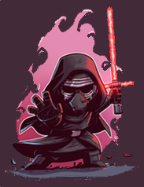
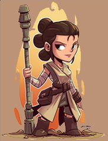

Selecione um personagem
- 
- 
-

BB-8
Droide astromecânico da série BB que operou aproximadamente trinta anos depois da Batalha de Endor. Pertencia ao piloto da Resistência Poe Dameron, a quem ele acompanhou durante seus vôos em seu caça estelar T-70X X-wing.